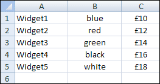
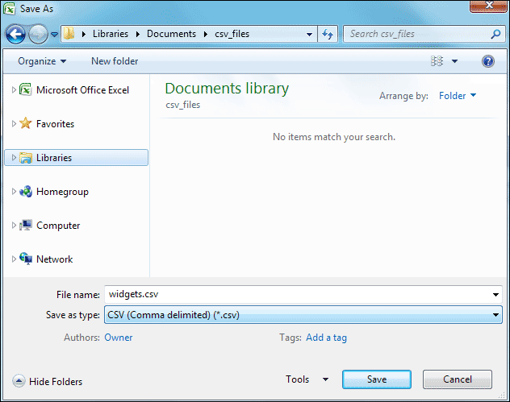
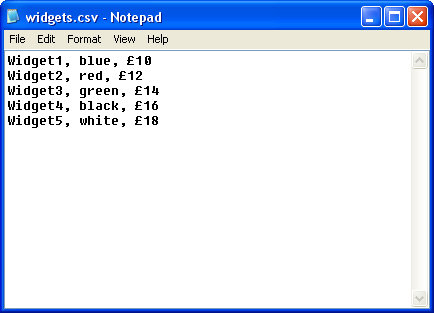

CSV files and PHP
CSV is a type of file. It means Comma Separated Values. Spreadsheets software like Excel will offer you the opportunity to save files with the CSV extension. We'll see how to work with these types of files now.
The image below shows an Excel spreadsheets. It's just a simple price list:

The next image shows the spreadsheet being saved as a CSV file:

And here's what the data looks like in a text editor:

The above CSV file is the one we want to work with. It shows each line separated by commas.
PHP has a function that allows you to work with CSV file. It's called fgetcsv( ). It's just like the fgets function you used earlier. The difference is that fgetcsv( ) separates each line on the commas, and puts each part into an array. Before trying the next code, make sure you copy the widgets.csv file, from the ones you downloaded, over to the same folder where your script is. The widgets.csv file is in the scripts folder. Here's the code:
<?PHP
$file_handle = fopen("widgets.csv", "r");
while (!feof($file_handle) ) {
$line_of_text = fgetcsv($file_handle, 1024);
print $line_of_text[0] . $line_of_text[1]. $line_of_text[2] . "<BR>";
}
fclose($file_handle);
?>
When you run the script, you should see all the lines of text printed out. Here's how it works.
The first two lines you've already met: get a handle to the file you want to open, then create a while loop to loop round it.
$file_handle = fopen("widgets.csv", "r");
while ( !feof($file_handle) ) {
}
Inside the while loop, though, we have our fgetcsv line:
$line_of_text = fgetcsv( $file_handle, 1024 );
In between the round brackets of fgetcsv, we've typed to things: our file handle, and the size of the line to read. The size, in this case, is 1024 - 1 kilobyte. You can change this value. When the function gets the line of text, it puts it into the variable we've called $line_of_text.
But $line_of_text will now be an array. Each line of our text file looks like this:
Widget1, blue, £10
The fgetcsv function will split this line when it sees the comma. It then creates a position in the array to hold each part of the line. So it will set up an array with three positions, in our case. Those positions will be as follows:
$line_of_text[0]
$line_of_text[1]
$line_of_text[2]
To print it all out, we had a this line:
print $line_of_text[0] . $line_of_text[1]. $line_of_text[2] . "<BR>";
All we're doing here is to print out what is in each position of the array. We've then added a HTML line break, just for display purposes.
If you have CSV files from a spreadsheet that you need to display on a web page, the fgetcsv function can come in quite handy!
In the next part, you'll see other options for reading a text file line by line